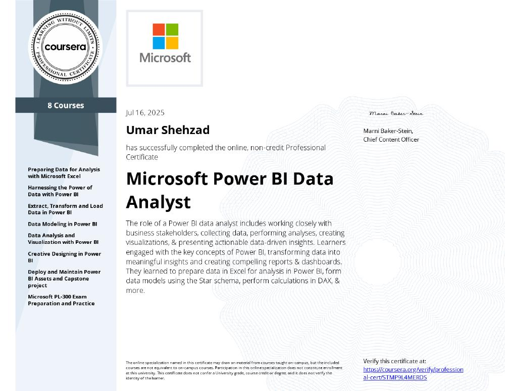

Global Life Expectancy Analysis
Related Power BI portfolio project completed separately from this certificate.
Explore project →16 July 2025 · 8 courses · Online, non-credit programme
Business intelligence, data transformation, dimensional modelling and analytical dashboards.
Professional Certificate developed by Microsoft and delivered through Coursera; this does not establish that the separate PL-300 exam was passed.
Official course titles listed on the awarded certificate.
Related Power BI portfolio project completed separately from this certificate.
Explore project →Credential ID: STMP9L4MERDS
Open PDF ↗Download PDFVerify credential ↗
If the embedded PDF is unavailable, use Open PDF above.